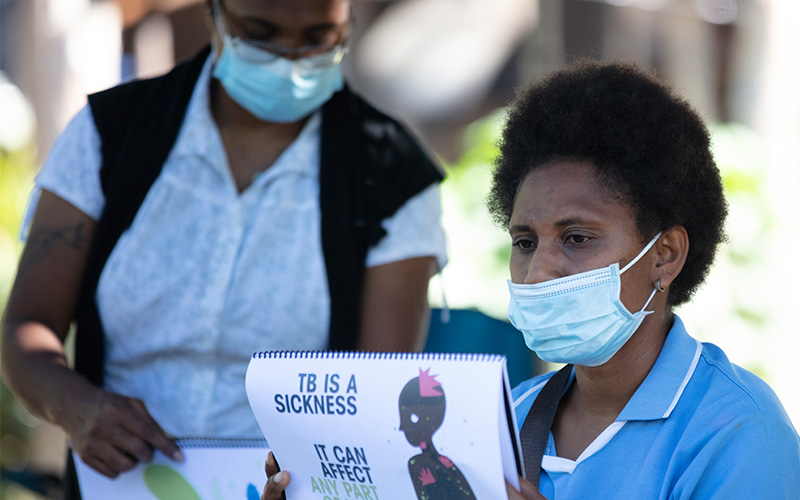

TB Disease in Papua New Guinea
-

TB Treatment
LThrough The Global Fund to Fight AIDS, Tuberculosis and Malaria, we’re using Directly Observed Treatment, Short-courses (DOTS) to respond to TB in Port Moresby and across the country.
DOTS is the World Health Organization-approved approach to treating TB, bringing the necessary medical facilities and education to communities where it’s needed most.
Rather than relying on patients to travel long distances to receive appropriate care, health professionals come to their communities instead, where they administer treatment and educate the public about TB at Basic Management Units. One busy unit, the Six Mile Clinic in Port Moresby, is equipped with a laboratory and trained technicians, enabling faster diagnosis and more timely treatment for sufferers.
This approach greatly increases the likelihood of patients completing their treatment, while also lowering the number of sufferers who develop a drug-resistant form of TB.
In a more holistic sense, we are also partnering with the Australian Government as well as the Papua New Guinean National TB Program to strengthen the local healthcare system. As part of this, we’re promoting improvements in medicine, technology, education and policy – all critical in the fight against TB.